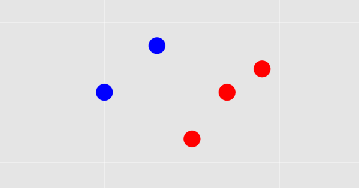

K-Nearest Neighbors¶
Pengertian Algoritma K-Nearest Neighbors¶

K-nearest neighbors atau knn adalah algoritma yang berfungsi untuk melakukan klasifikasi suatu data berdasarkan data pembelajaran (train data sets), yang diambil dari k tetangga terdekatnya (nearest neighbors). Dengan k merupakan banyaknya tetangga terdekat.
Cara Kerja Algoritma K-Nearest Neighbors (KNN)¶
K-nearest neighbors melakukan klasifikasi dengan proyeksi data pembelajaran pada ruang berdimensi banyak. Ruang ini dibagi menjadi bagian-bagian yang merepresentasikan kriteria data pembelajaran. Setiap data pembelajaran direpresentasikan menjadi titik-titik c pada ruang dimensi banyak.
Data baru yang diklasifikasi selanjutnya diproyeksikan pada ruang dimensi banyak yang telah memuat titik-titik c data pembelajaran. Proses klasifikasi dilakukan dengan mencari titik c terdekat dari c-baru (nearest neighbor). Teknik pencarian tetangga terdekat yang umum dilakukan dengan menggunakan formula jarak euclidean.
Berikut beberapa formula yang digunakan dalam algoritma knn.
- Euclidean Distance adalah formula untuk mencari jarak antara 2 titik dalam ruang dua dimensi.
-
Hamming Distance adalah cara mencari jarak antar 2 titik yang dihitung dengan panjang vektor biner yang dibentuk oleh dua titik tersebut dalam block kode biner.
-
Manhattan Distance adalah formula untuk mencari jarak d antar 2 vektor p,q pada ruang dimensi n.
-
Minkowski Distance adalah formula pengukuran antar 2 titik pada ruang vektor normal yang merupakan hibridisasi yang mengeneralisasi euclidean distance dan mahattan distance.
Teknik pencarian tetangga terdekat disesuaikan dengan dimensi data, proyeksi, dan kemudahan implementasi oleh pengguna.
Tahapan Langkah Algoritma K-NN¶
- Menentukan parameter k (jumlah tetangga paling dekat).
- Menghitung kuadrat jarak eucliden objek terhadap data training yang diberikan.
- Mengurutkan hasil no 2 secara ascending (berurutan dari nilai tinggi ke rendah)
- Mengumpulkan kategori Y (Klasifikasi nearest neighbor berdasarkan nilai k)
- Dengan menggunakan kategori nearest neighbor yang paling mayoritas maka dapat dipredisikan kategori objek.
Kelebihan dan Kekurangan K-Nearest Neighbors¶
Kelebihan:
- Lebih efektif di data training yang besar Dapat menghasilkan data yang lebih akurat
- Mudah dipahami dan diimplementasikan
Kekurangan:
- Perlu menunjukkan parameter K (jumlah tetangga terdekat)
- Tidak menangani nilai hilang (missing value) secara implisit
Studi Kasus (Pima Indians)¶
Pima Indians dengan Metode Algoritma K-Nearest Neighbors (KNN)
Persiapan¶
- Python Version: 3.7.1
- Pip Version: 19.1.1
- Spyder Version: 3.3.2
- Data yang digunakan yaitu Pima Indians Dataset yang diperoleh dari Kaggle.com
https://github.com/bayualhaq/Bahan
Berdasarkan Data Pima Indians Dataset dapat diketahui bahwa terdapat 392 data. Dalam data ini terdapat 9 variabel yaitu pregnant, glucose, diastolic, triceps, insulin, bmi, diabetes, age, test.
Selanjutnya, klasifikasi menggunakan K-Nearest Neighbor dapat dilakukan dalam phyton seperti berikut.
Langkah-langkah:¶
1. Import Library¶
- Python package yang dibutuhkan dalam pembuatan program ini:
import math import pandas as pd import matplotlib.pyplot as plt
2. Import Data CVS ke python¶
memasukkan data csv dari komputer ke python
dataset = pd.read_csv('PimaIndians.csv')
3. Mengambil Kolom Data dari CSV¶
col_pre = dataset.iloc[:, 0].values #mengambil kolom 1 dari excel (pregnant) col_glu = dataset.iloc[:, 1].values #mengambil kolom 2 dari excel (glucose) col_dias = dataset.iloc[:, 2].values #mengambil kolom 3 dari excel (diastilic) col_tri = dataset.iloc[:, 3].values #mengambil kolom 4 dari excel (triceps) col_ins = dataset.iloc[:, 4].values #mengambil kolom 5 dari excel (insulin) col_ins = dataset.iloc[:, 5].values #mengambil kolom 6 dari excel (bmi) col_bmi = dataset.iloc[:, 6].values #mengambil kolom 7 dari excel (diabetes) col_glu = dataset.iloc[:, 7].values #mengambil kolom 8 dari excel (age) col_test = dataset.iloc[:, 8].values #mengambil kolom 9 dari excel (test)
4. Membuat Inputan nilai K¶
user dapat memasukkan inputan nilai K sesuai dengan keinginan
knn=int(input("Masukkan Nilai K = "))
Output:
Masukkan Nilai K = 5
5. Membuat Variable kosong untuk menyimpan nilai¶
variable untuk menyimpan nilai data train
pre=[] glu= [] dias= [] tri= [] ins= [] bmi= [] diab= [] age= [] test= []
variable untuk menyimpan nilai data tes
pre_dt=[] glu_dt= [] dias_dt= [] tri_dt= [] ins_dt= [] bmi_dt= [] diab_dt= [] age_dt= [] test_dt= []
variable untuk menyimpan nilai hasil perhitungan
Hasil=[] benar=[] data=[] accuracy=[] knn_graf=[]
6. Membuat Fungsi Data Train Class 0¶
fungsi mengambil data train yang mempunyai nilai class 0 dengan nama masuk_data_train_0
def masuk_data_train_0 (data,masuk): a=0 for i in range (len (data)): if (col_test[i] ==0 and a<26): masuk.append(data[i]) a=a+1
7. Membuat Fungsi Data Train Class 1¶
fungsi mengambil data train yang mempunyai nilai class 1 dengan nama masuk_data_train_1
def masuk_data_train_1 (data,masuk): a=0 for i in range (len (data)): if (col_test[i] == 1 and a<13): masuk.append(data[i]) a=a+1
8. Membuat Fungsi Data Test Class 0¶
fungsi mengambil data tes yang mempunyai nilai class 0 dengan nama masuk_data_test_0
def masuk_data_test_0 (data,masuk): a=0 for i in range (len (data)): if (col_test[i] == 0): a+=1 if(a>26): masuk.append(data[i])
9. Membuat Fungsi Data Test Class 1¶
fungsi mengambil data tes yang mempunyai nilai class 1 dengan nama masuk_data_test_1
def masuk_data_test_1 (data,masuk): a=0 for i in range (len (data)): if (col_test[i] == 1): a+=1 if(a>13): masuk.append(data[i])
10.Membuat Fungsi pcx¶
fungsi mengambil data dari beberapa variable data train, data tes, knn
def pcx(data1,data2,data3,data4,data5,data6,data7,data8,data9, dt1,dt2,dt3,dt4,dt5,dt6,dt7,dt8,dt9, k,out):
membuat perulangan untuk menghitung jarak dari data asli dengan data tes
for i in range(len(dt1)): dist1=[] test=[] coba=0 for a in range(len(data1)): dist = math.sqrt( ((data1[a] - dt1[i])**2) + ((data2[a] - dt2[i])**2) + ((data3[a] - dt3[i])**2) + ((data4[a] - dt4[i])**2) + ((data5[a] - dt5[i])**2) + ((data6[a] - dt6[i])**2) + ((data7[a] - dt7[i])**2) + ((data8[a] - dt8[i])**2)) dist1.append(dist) dist1,test = zip(*sorted(zip(dist1,data9))) for z in range(k): if (test[z]==0) : coba+=1 if ((z/2)<=coba): a=0 out.append(a) else : a=1 out.append(a) del dist1 del test coba=0
11. Membuat Fungsi hasil¶
fungsi ini digunakan untuk menghitung kebenaran data, jumlah data dan ke akurasian data
def hasil(data_asli,data_perbandingan,out,out2,out3): a=0 for x in range(len(data_asli)): if (data_asli[x]==data_perbandingan[x]): a+=1 out.append(a) out2.append(353) out3.append(a/353)
12. Memasukkan data ke fungsi masuk_data_train_0¶
memasukkan data train mempunyai nilai class 0
masuk_data_train_0(col_pre,pre) masuk_data_train_0(col_glu,glu) masuk_data_train_0(col_dias,dias) masuk_data_train_0(col_tri,tri) masuk_data_train_0(col_ins,ins) masuk_data_train_0(col_ins,bmi) masuk_data_train_0(col_bmi,diab) masuk_data_train_0(col_glu,age) masuk_data_train_0(col_test,test)
13. Memasukkan data ke fungsi masuk_data_train_1¶
memasukkan data train mempunyai nilai class 1
masuk_data_train_1(col_pre,pre) masuk_data_train_1(col_glu,glu) masuk_data_train_1(col_dias,dias) masuk_data_train_1(col_tri,tri) masuk_data_train_1(col_ins,ins) masuk_data_train_1(col_ins,bmi) masuk_data_train_1(col_bmi,diab) masuk_data_train_1(col_glu,age) masuk_data_train_1(col_test,test)
14. Memasukkan data ke fungsi masuk_data_test_0¶
memasukkan data tes mempunyai nilai class 1
masuk_data_test_0(col_pre,pre_dt) masuk_data_test_0(col_glu,glu_dt) masuk_data_test_0(col_dias,dias_dt) masuk_data_test_0(col_tri,tri_dt) masuk_data_test_0(col_ins,ins_dt) masuk_data_test_0(col_ins,bmi_dt) masuk_data_test_0(col_bmi,diab_dt) masuk_data_test_0(col_glu,age_dt) masuk_data_test_0(col_test,test_dt)
15. Memasukkan data ke fungsi masuk_data_test_1¶
memasukkan data train mempunyai nilai class 1
masuk_data_test_1(col_pre,pre_dt) masuk_data_test_1(col_glu,glu_dt) masuk_data_test_1(col_dias,dias_dt) masuk_data_test_1(col_tri,tri_dt) masuk_data_test_1(col_ins,ins_dt) masuk_data_test_1(col_ins,bmi_dt) masuk_data_test_1(col_bmi,diab_dt) masuk_data_test_1(col_glu,age_dt) masuk_data_test_1(col_test,test_dt)
16. Membuat perulangan KNN¶
for knnn in range(knn-1): knnn+=2 del Hasil Hasil=[]
17. Memasukkan data train, data tes ke fungsi pcx¶
pcx(pre,glu,dias,tri,ins,bmi,diab,age,test, pre_dt,glu_dt,dias_dt,tri_dt,ins_dt,bmi_dt,diab_dt,age_dt,test_dt, knnn,Hasil)
18. Memasukkan data Class¶
kebenaran data, jumlah data dan ke akurasian data
#test_dt yaitu data asli diambil dari kolom test #Hasil yaitu perhitungan data dari pcx sehingga menghasilkan nilai 0 dan nilai 1 #benar yaitu perhitungan setelah data dibandingan dengan data asli #data yaitu banyak nya data dari data tes #accuracy yaitu membagi benar dengan data sehingga mendapat nilai keakurasian hasil(test_dt,Hasil,benar,data,accuracy)
19. Membuat titik untuk grafik¶
knn_graf.append(knnn)
20. Memasukkan data ke bentuk table¶
df = pd.DataFrame({'knn':knn_graf,'databenar':benar, 'Jmldata':data, 'accuracy':accuracy}) print (df)
Output:
knn databenar Jmldata accuracy 0 2 236 353 0.668555 1 3 241 353 0.682720 2 4 240 353 0.679887 3 5 240 353 0.679887
21. Menampilkan data dalam bentuk grafik batang¶
df.plot(kind='line',x='knn',y='accuracy',color='blue') plt.show()
Output: